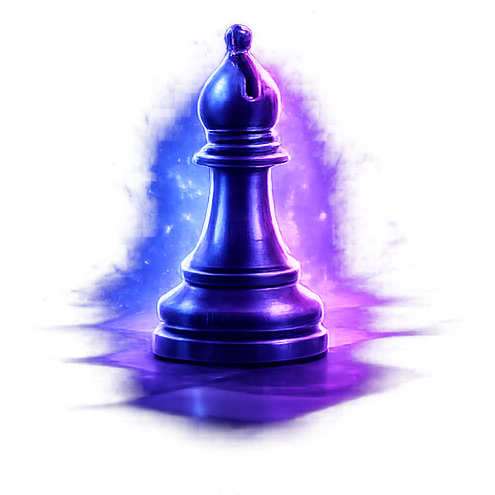

Le maître des diagonales.

Le fou est une pièce longue portée qui contrôle les diagonales. Chaque joueur possède un fou de cases blanches et un de cases noires.
Il se déplace uniquement en diagonale, sur autant de cases que possible.
La paire de fous est très puissante. Ensemble, ils contrôlent un grand nombre de cases.
Place ton fou sur une grande diagonale ouverte pour exercer une pression constante.